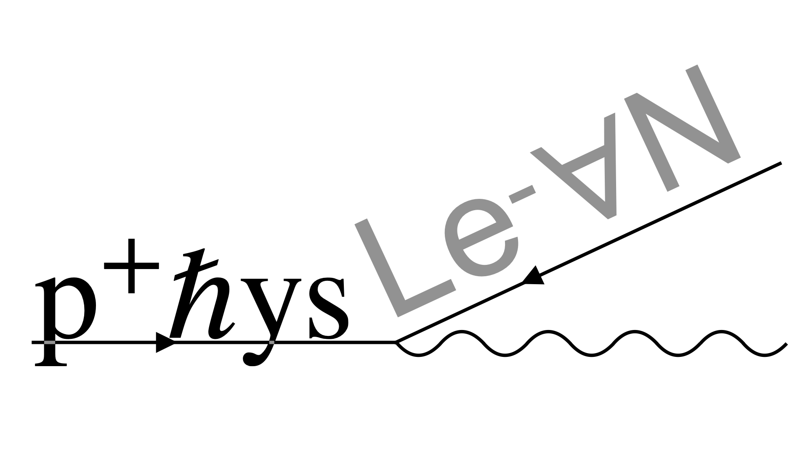

Scan for slides

Digitalizing physics into Lean 4
Joseph Tooby-Smith, University of Bath
Slides at: https://josephtoobysmith.com/Slides/London2026.html
PhysLean
The community
Over 38 contributors to the project.
How do we include the physics context?


What is currently in PhysLean?

Image credit: Shlok Vaibhav
The harmonic oscillator
Click a file on the left to see code.